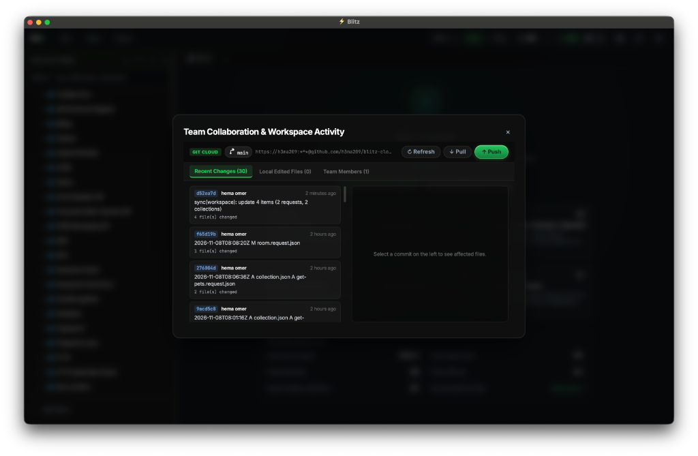

Open-source beta (v0.2.15-beta) · Rust & Dioxus · MIT License
Let Cursor and Claude drive a local API client via MCP.
Blitz is a local-first desktop API client and CLI written in Rust (using Dioxus and your OS web view). It embeds a 42-tool stdio MCP server so coding assistants can import OpenAPI specs, run collections, and inspect responses without copying request payloads or credentials into chat prompts.
Early beta notice: Blitz is roughly a month old and maintained by one developer. Expect occasional rough edges, unsigned installers, and macOS-first keychain persistence.
- 42-Tool Stdio MCP Drives local collections over JSON-RPC stdio
- Git-Backed JSON Collections stored on disk; sync via your Git remote
- Measured Footprint ~24 MB binary · ~10.4 MB CLI peak RSS · ~198–346 MB GUI

How Cursor / Claude Drives Blitz
Example: “Import this OpenAPI spec and test the login endpoint against staging.” Your IDE calls blitz_sync_openapi then blitz_send_request locally over JSON-RPC stdio.
View all 42 tools →
Configure Your IDE in One Command
One compiled Rust binary handles three roles: the desktop workbench GUI, the local stdio MCP server (blitz mcp) for AI coding assistants, and the headless collection runner (blitz run) for CI pipelines. Setup takes a single command and leaves no background daemon or open network port running when you close your IDE.
Scans your machine for supported AI IDEs and writes a local blitz mcp stdio entry into their config. Your assistant can then read collections, send requests against your local environments, and suggest assertions—without exposing an HTTP port or sending secrets to a remote server.
Runs the exact same collections, environments, pre-request scripts, and blitz.test assertions in your terminal or CI pipeline (GitHub Actions, GitLab CI) with zero GUI overhead, JUnit XML reporting, and standard 0 / 1 exit codes.
Four Core Capabilities, Explained
Everything in Blitz is built around keeping your API collections, environments, and secrets on your own machine while still letting AI assistants and teammates collaborate. Below is how the MCP server, Git branch sync, platform credential storage, and multi-protocol engine fit together.
42-Tool Stdio MCP Server
When you run blitz mcp, Blitz starts a local JSON-RPC server over standard input/output. Cursor, Claude, Antigravity, or Windsurf can import OpenAPI specs (blitz_sync_openapi), send requests against your local environments (blitz_send_request), compare staging vs. production payloads (blitz_diff_responses), and generate client code.
Because requests execute inside Blitz on your machine, you never have to paste bearer tokens or raw production responses into chat prompts.
Git-Backed Collections & Conflict Diff
Collections and environments are saved as clean JSON files inside {data_dir}/blitz/cloud/. Blitz maps each environment to a Git branch (env/<slug>), authenticates using your existing SSH keys or gh credentials, and never auto-pushes without you clicking Sync.
If two teammates edit the same request on the same branch, Blitz flags the unmerged files and opens a side-by-side Ours-vs-Theirs resolver inside the app.
Platform-Aware Secrets Handling
Variables resolve in order: Local > Environment > Collection > Global, alongside Postman-compatible $faker dynamic generators. On macOS, secret:// references resolve from macOS Keychain (Security.framework); on Windows and Linux, secret:// currently falls back to in-memory storage.
{{vault:key}} entries live in local unencrypted vault.json on disk, are excluded from Git sync, and are redacted from MCP tool responses.
8 Protocols, Boa JS & Local Utilities
Test HTTP/1.1+2 (reqwest), GraphQL & GraphQL-WS, WebSockets (tokio-tungstenite), Server-Sent Events, Socket.IO v4, gRPC unary (JSON-to-Protobuf), MQTT (rumqttc), and external MCP servers in one window. Imports Postman v2.1, OpenAPI 3.0 (preserving existing scripts and assertions), cURL, and HAR.
Includes an embedded Boa JS sandbox (blitz.test / pm.*), local capture proxy, 127.0.0.1 mock router, multi-language codegen, and standalone Swagger UI / HTML export.

Commit history, active branch, and remote sync status—managed against your own Git repository.

Live bidirectional WebSocket frame log with saved message presets and payload inspection.
docs/screenshot-cockpit.png (currently identical to docs/app-screenshot.png) with a distinct cockpit view.]
How Blitz Compares
A direct look at how Blitz's architecture, licensing, and AI integration stack up against Postman, Bruno, Insomnia, and Yaak. This includes areas where mature clients still lead—such as signed installers, cross-platform keychains, and plugin ecosystems—so you can weigh the trade-offs before switching.
Measured with /usr/bin/time -l and macOS footprint on a --release build (~24 MB binary on disk):
headless CLI cold start completed in < 20 ms with ~10.4 MB peak RSS (~3.5 MB physical footprint).
Desktop GUI measured with 9 open request tabs: ~198 MB physical footprint for the main process (~346 MB total including OS WKWebView WebContent/GPU/Networking helper processes).
Competitor memory and cold-start timings are not benchmarked here under matching conditions; check upstream docs for current release specs.
| Dimension | Blitz (v0.2.15-beta) | Postman | Bruno | Insomnia | Yaak |
|---|---|---|---|---|---|
| UI Runtime | Rust + Dioxus (OS WebView: WKWebView / WebView2) | Electron (Chromium + Node.js) | Electron (Chromium + Node.js) | Electron (Chromium + Node.js) | Rust + Tauri (OS WebView + React) |
| Measured Memory (GUI vs CLI) | GUI: ~198 MB main / ~346 MB total (9 tabs) CLI: ~10.4 MB peak RSS |
Not benchmarked here | Not benchmarked here | Not benchmarked here | Not benchmarked here |
| Cold-Start Latency | CLI: < 20 ms GUI: [VERIFY: GUI cold start] |
Not benchmarked here | Not benchmarked here | Not benchmarked here | Not benchmarked here |
| License & Pricing | MIT (Open Source) | Proprietary (Free + Paid) | MIT Core + Paid Pro/Golden | Apache-2.0 Core + Paid Plans | MIT Source; Paid Commercial Prebuilt |
| AI Agent Server (MCP) | Built-in Stdio (42 Tools) | Official MCP server (cloud/API-key) | Community bruno-mcp stdio runner |
Native MCP client (tests MCP servers) | MCP server plugin |
| Account & Sync Model | No account; local JSON + Git branches | Cloud workspaces (Scratch Pad deprecated; lightweight offline mode) | No account; .bru files in Git | Local Scratch Pad + Cloud/Git | No account; local SQLite / file sync |
| Secrets & OS Keychain | macOS Keychain (secret://); in-memory fallback on Win/Linux; plaintext vault.json |
Cloud Vault / masked vars | .env / secret vars | Cloud / local storage | Encrypted store / keychain |
| Maturity & Community Size | Beta (~1 month old, solo maintainer, small early community) | 10+ years, large enterprise & community | Established OSS community | Mature, widely deployed | Active OSS/indie community |
| Platform Support (Prebuilt) | macOS arm64, Linux x86_64, Windows x86_64 (no macOS Intel binary) | macOS (Universal), Linux, Windows | macOS (Universal), Linux, Windows | macOS (Universal), Linux, Windows | macOS (Universal), Linux, Windows |
| Code-Signed Installers | Unsigned (requires OS bypass) | Signed & notarized | Signed releases | Signed & notarized | Signed releases |
| Ecosystem & Cloud Monitors | No plugin marketplace or cloud monitors | Large ecosystem, monitors, enterprise SSO | CLI + GitHub Actions ecosystem | Plugin ecosystem + Kong CLI | Plugin API (gRPC/Node) |
Known Limitations & Roadmap
Blitz is roughly a month old and maintained by one developer. Before adopting it for daily work or storing sensitive credentials, review the current platform gaps—especially unsigned installers, macOS-only keychain persistence, and single-architecture macOS releases.
1. Unsigned Desktop Builds
macOS and Windows installers are not yet signed with paid Apple Developer ID or Windows EV certificates. Both operating systems will show security prompts until signing or upstream package-manager curation is in place.
2. Keychain Persistence Is macOS-Only Today
secret:// references bind to macOS Keychain via keyring. On Windows and Linux, secret:// currently uses an in-memory fallback (not persisted across restarts), and {{vault:key}} stores values in local unencrypted vault.json. Cross-platform credential-store support is on the roadmap.
3. Pre-Built macOS Release Architecture
Published macOS release artifacts (Blitz-macos-arm64.dmg / .tar.gz) target Apple Silicon (arm64) only. Intel (x86_64) Macs currently need to build from source with Cargo.
4. Solo-Maintained Early Beta
Blitz has roughly one month of development history by one maintainer. Package-manager manifests (winget, scoop, Homebrew tap) are not yet published/merged, and gRPC currently supports unary calls only (server reflection and client/bidirectional streaming are unimplemented).
Download from GitHub Releases or Build Locally
During the beta, downloading tagged archives directly from GitHub Releases (or building from source with Cargo) is the most reliable path. Because binaries are not yet code-signed, verify the published SHA256SUMS file before clearing OS Gatekeeper or SmartScreen prompts.
Prebuilt release targets Apple Silicon (arm64) only. Intel x86_64 Macs build from source below.
Standalone Linux x86_64 binary archive with desktop entry setup.
Windows x86_64 zip using Microsoft Edge WebView2 runtime.
Compare downloaded archives against the published v0.2.15 SHA256SUMS file before running:
shasum -a 256 Blitz-macos-arm64.dmg # macOS | sha256sum -c SHA256SUMS # Linux
brew tap h3ma209/blitz && brew install --cask blitz
Tap repository h3ma209/homebrew-blitz is not yet published.
winget install --id h3ma209.Blitz -e
Manifest in packaging/winget/ — not yet merged upstream.
scoop install blitz
Manifest in packaging/scoop/ — pending upstream bucket availability.
# 1. Clone repository
git clone https://github.com/h3ma209/Blitz.git
cd Blitz
# 2. Build & install user app
make install
# 3. Or launch development build
make runWhy Blitz binaries are currently unsigned & what OS bypass commands do expand
As a solo-maintained open-source beta, Blitz does not yet purchase paid Apple Developer ID or Windows code-signing certificates. Because of that, macOS Gatekeeper and Windows SmartScreen flag downloaded binaries as from an unidentified developer. Verify the release SHA-256 checksum first; if you choose to run the unsigned build, these commands remove the OS download quarantine flag:
xattr -cr /Applications/Blitz.appUnblock-File "$env:LOCALAPPDATA\Blitz\blitz.exe"Alternative: Terminal install scripts (inspect before running) expand
Review install.sh or install.ps1 before piping to a shell:
curl -fsSL https://raw.githubusercontent.com/h3ma209/Blitz/master/install.sh | bash
irm https://raw.githubusercontent.com/h3ma209/Blitz/master/install.ps1 | iex
Audit the Code, Releases, and Security Policy
When a tool handles API keys and internal endpoints, you should be able to verify every claim in the source. Browse recent commits, tagged release notes, open issues, and our secret-handling policy in SECURITY.md directly on GitHub.
[PLACEHOLDER: Link live repo stats / recent commit cadence if desired]
Full release notes, tagged source tarballs, and downloadable assets.
Report crashes, protocol quirks, or collection import bugs directly.
Vulnerability reporting & secret handling. [PLACEHOLDER: Maintainer security contact email]